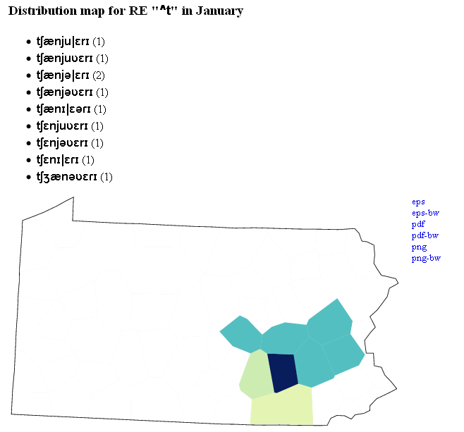

Distribution maps are created for string data and categorical data. The maps show the geographic distribution of a chosen variant (or variants) of a linguistic variable.
In the drop down menu of items, choose a variable and click 'Select item' All variants of this variable (with the number of occurrences in brackets) will be listed. To show a map you can click on one of the variants and then on the button 'Show distribution map'. The map shows in which of the sites the specific variant is used: the darker the color the more frequent use (see whole color range).
By pressing the Ctrl button on the keyboard, more than one variant can be chosen. Clicking 'Show distribution map' will show the sites where any of the chosen variants is used.
Another way of selecting multiple variants simultaneously is to use regular expressions. For example, typing '^t' in the box for regular expressions and clicking 'Show distribution map' will automatically select the variants starting with a 't' and show the distribution map for these variants:
